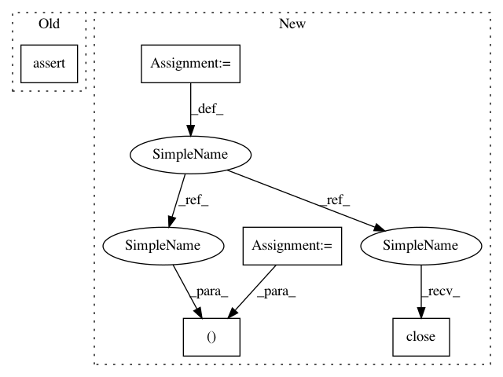

24cc9536e4969716b3080498426af8e47dee7907,tests/classifiers/test_tensorflow.py,TestTFClassifier,test_loss_gradient,#TestTFClassifier#,125
Before Change
grads = self.classifier.loss_gradient(x_test, y_test)
self.assertTrue(np.array(grads.shape == (NB_TEST, 28, 28, 1)).all())
self.assertNotEqual(np.sum(grads), 0)
def test_layers(self):
// Get MNIST
(_, _), (x_test, _) = self.mnist
After Change
sess.close()
def test_loss_gradient(self):
classifier, sess = get_classifier_tf()
gradients = classifier.loss_gradient(self.x_test, self.y_test)
self.assertTrue(gradients.shape == (NB_TEST, 28, 28, 1))
expected_gradients_1 = np.asarray([0.00279603, 0.00266946, 0.0032446, 0.00396258, -0.00201465, -0.00564073,
0.0009253, 0.00016253, 0.0040816, 0.00166697, 0.0015883, -0.00121023,
-0.00390778, -0.00234937, 0.0053558, 0.00204322, -0.00172054, 0.00053564,
-0.0021146, -0.00069308, 0.00141374, 0.0, 0.0, 0.0,
0.0, 0.0, 0.0, 0.0, ])
np.testing.assert_array_almost_equal(gradients[0, 14, :, 0], expected_gradients_1, decimal=4)
expected_gradients_2 = np.asarray([1.05401428e-04, 1.06959546e-04, 2.60490313e-04, 2.74000311e-04,
-1.15295035e-04, 2.16038228e-04, 1.37472380e-04, 0.00000000e+00,
0.00000000e+00, -2.91720475e-03, -3.08302144e-04, 2.63109524e-03,
-1.18699251e-03, 2.63655302e-03, 5.35579538e-03, 6.38693338e-03,
3.44644510e-03, 6.68899389e-04, 5.01601025e-03, 8.40547902e-04,
-1.43233046e-05, -2.79442966e-03, 7.37082795e-04, 0.00000000e+00,
0.00000000e+00, 0.00000000e+00, 0.00000000e+00, 0.00000000e+00])
np.testing.assert_array_almost_equal(gradients[0, :, 14, 0], expected_gradients_2, decimal=4)
tf.reset_default_graph()
sess.close()
def test_layers(self):
classifier, sess = get_classifier_tf()
layer_names = classifier.layer_names
In pattern: SUPERPATTERN
Frequency: 3
Non-data size: 5
Instances
Project Name: IBM/adversarial-robustness-toolbox
Commit Name: 24cc9536e4969716b3080498426af8e47dee7907
Time: 2019-08-17
Author: beat.buesser@ie.ibm.com
File Name: tests/classifiers/test_tensorflow.py
Class Name: TestTFClassifier
Method Name: test_loss_gradient
Project Name: IBM/adversarial-robustness-toolbox
Commit Name: 24cc9536e4969716b3080498426af8e47dee7907
Time: 2019-08-17
Author: beat.buesser@ie.ibm.com
File Name: tests/classifiers/test_tensorflow.py
Class Name: TestTFClassifier
Method Name: test_class_gradient
Project Name: IBM/adversarial-robustness-toolbox
Commit Name: 24cc9536e4969716b3080498426af8e47dee7907
Time: 2019-08-17
Author: beat.buesser@ie.ibm.com
File Name: tests/classifiers/test_tensorflow.py
Class Name: TestTFClassifier
Method Name: test_layers